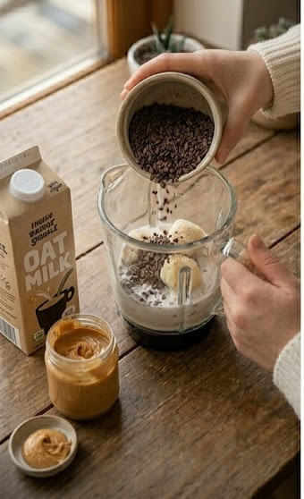
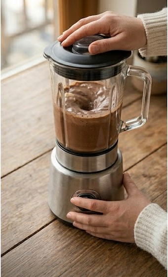
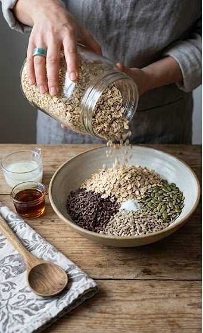
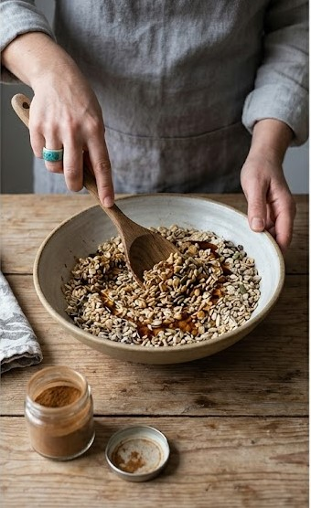
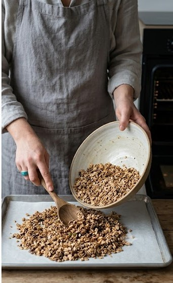
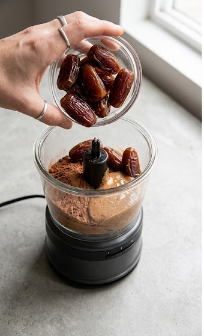
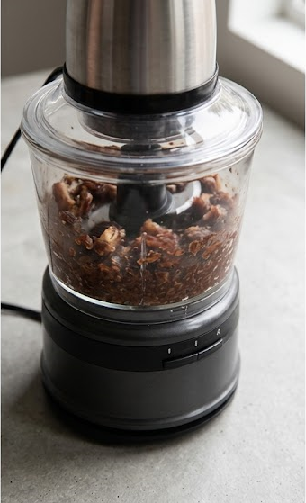
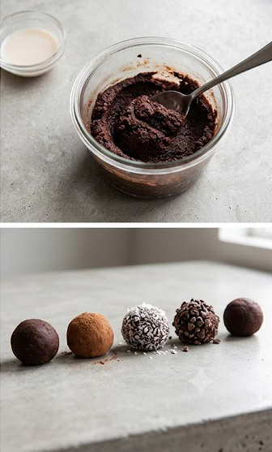

Tutoriales
Todo lo que necesitás saber para preparar y disfrutar tu cacao
Para empezar
Si es tu primera vez con el Cacao Ritual, estos tutoriales son tu punto de partida.
Tu primera taza de Cacao Ritual
Agua a 70-75°C, nunca hirviendo. Usá 28 a 42 g de pasta por taza de 250ml y batí al menos 30 segundos hasta lograr espuma. Una pizca de sal potencia el sabor.

Cacao Ritual vs Chocolate: qué los diferencia
El chocolate comercial destruye hasta el 90% de los flavonoides al procesarlo. El Cacao Ritual se tuesta suave y conserva sus compuestos originales: distinto sabor, distinto propósito y efecto.

Los beneficios reales de la teobromina
La teobromina da energía estable por 6-10 horas sin el crash de la cafeína. Sumale magnesio, PEA y anandamida: compuestos que el chocolate procesado ya no conserva en cantidad.
Recetas con cacao
Smoothie energizante de cacao y plátano
Ingredientes:
- 1 plátano mediano congelado
- 1 cucharada sopera de cacao en polvo Ritual o 15 g de pasta rallada
- 250 ml de leche de avena
- 1 cucharada de mantequilla de maní
- Opcional: una pizca de canela
- Opcional: 1/2 cucharadita de miel de caña

Paso 1: Medir y preparar la base
Vierte la pasta pura de cacao ritual picada (o cacao en polvo). Pela las bananas congeladas y colócalas en la licuadora. Esta base asegura la cremosidad y el sabor intenso.

Paso 2: Licuar hasta Homogeneizar
Agrega la leche de avena, la mantequilla de maní y los ingredientes opcionales (canela, miel de caña). Licúa todo a potencia máxima durante 45 segundos hasta que esté completamente suave y homogéneo.
Paso 3: Servir con Presencia y Disfrutar
Vierte el smoothie en tu vaso o taza favorita. Notarás la textura cremosa y la microespuma. Disfruta de un desayuno nutritivo, lleno de energía sostenida.
Granola artesanal con nibs de cacao
Ingredientes para una tanda de cuatro días:
- 2 tazas de avena arrollada gruesa
- 1/2 taza de nibs de cacao
- 1/2 taza de semillas (girasol, zapallo, sésamo o las que tengas)
- 3 cucharadas de aceite de coco derretido
- 3 cucharadas de miel de caña o jarabe de maple
- 1 cucharadita de canela
- 1 pizca de sal

Paso 1: Combinar y humedecer
Poné los ingredientes secos en un bowl grande. Agregá el aceite de coco derretido y el endulzante.

Paso 2: Mezclar
Revolvé todo hasta que cada grano y semilla quede bien cubierto por los líquidos. Asegurate de que no queden partes secas.

Paso 3: Hornear
Extendé la mezcla en una asadera. Horneá a 160°C por 20 min, revolviendo a la mitad para un tostado parejo. Dejá enfriar antes de guardar en un frasco hermético.
Trufas de cacao crudo con dátiles
Ingredientes:
- 200 g de dátiles Medjool sin carozo (si están secos, hidratarlos 10 minutos en agua tibia)
- 3 cucharadas de cacao en polvo Ritual
- 2 cucharadas de mantequilla de almendras o maní

Paso 1: Combinar
Colocá en la procesadora los 200 g de dátiles, las 3 cucharadas de cacao en polvo y las 2 cucharadas de mantequilla de almendras o maní.

Paso 2: Procesar
Procesá todo hasta lograr una masa compacta y pegajosa. Si la notás muy seca, sumá un chorrito de leche de avena para poder moldearla mejor.

Paso 3: Armar
Tomá porciones de masa con una cuchara y armá bolitas con las manos del tamaño de una nuez, luego pasá las trufas por cacao en polvo, coco rallado o nibs de cacao triturados. ¡Listas para comer o guardar en la heladera!
Nivel avanzado
Para quienes ya tienen práctica y quieren profundizar en el cacao como herramienta de bienestar.

Cómo crear tu ritual matutino de cacao
Un ritual implica presencia, no automatismo. Preparalo con intención, sin pantallas, y aprovechá los 20-30 minutos posteriores, ideales para el trabajo creativo o tareas que requieren foco.
Del árbol a la pasta: el procesado del cacao ritual
Fermentación de 5 a 7 días, secado al sol y tostado suave entre 110 y 130°C. Se muele en piedra sin refinar ni agregar nada: el grano completo en pasta.

Cómo elegir tu cacao según tu perfil
El origen define el perfil: mesoamericano intenso, ecuatoriano suave y frutado, peruano equilibrado. Desconfiá de las pastas muy dulces, suelen tener azúcar añadida o estar sobre-procesadas.